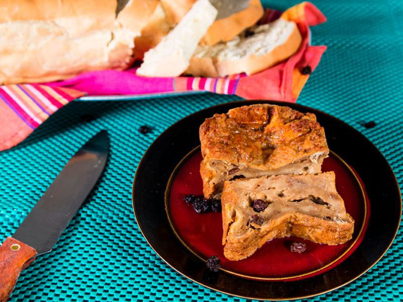

Jamaican Bread Pudding !!!

Preparation time 20m
Cooking time 45m
Ingredients
For 8 Person(s)
Recipe
- 8 slice(s) harddough bread
- 4 tablespoon(s) Margarine
- 1 cup(s) raisins
- 1/2 cup(s) granulated sugar
- 1/2 teaspoon(s) salt
- 1/2 teaspoon(s) cinnamon powder
- 1/2 teaspoon(s) all spice
- 4 large eggs
- 2 cup(s) whole milk
- 1 cup(s) evaporated milk
Jamaican Bread Pudding Directions
- 1. Butter one side of each slice of bread smoothly with 3 tablespoons Grace Hello Margarine.
- 2. Liberally butter a 1 litre ovenproof baking dish with remaining butter.
- 3. Cut or tear buttered bread into pieces (about 1 cm across) and arrange a layer in the bottom of the dish.
- 4. Sprinkle over 1/3 of the raisins, top with another layer of bread, then raisins, then with remaining bread and top with raisins.
- 5. In a bowl, combine granulated sugar, salt, cinnamon powder, allspice, eggs and milk, mix thoroughly but not excessively.
- 6. Pour mixture over the bread and raisins and allow to stand for 15 minutes.
- 7. Bake in a pre-heated oven 190°C (375°F) until pudding is nicely puffed, well browned on top or when a knife is inserted in the centre comes out clean.
To Serve: Serve warm, or allow to cool and then serve chilled in large pieces or slices ideally topped with dollops of whipped evaporated milk.